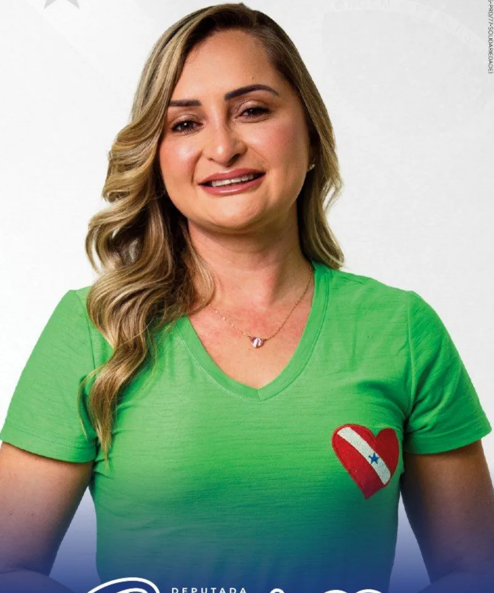
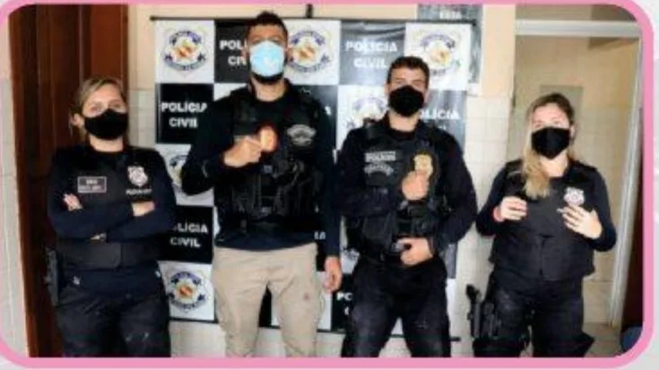

Proteção e acolhimento
Sala Amarela
Espaço de escuta especializada na delegacia, descrito no material como atendimento a mulheres e crianças vítimas de violência.
História pessoal.
Trajetória profissional.
Registros de uma vida pública.

Da experiência na indústria ao serviço público, o material biográfico reúne diferentes momentos da trajetória de Renata Fonseca.
O documento a apresenta como formada em Administração Pública, pós-graduada em Segurança Pública e com atuação na Polícia Civil do Pará e na assistência social de Oriximiná.
No âmbito familiar, registra que é mãe de Guilherme e esposa de Delegado Fonseca. A relação com Oriximiná aparece tanto nos registros pessoais quanto nas atividades profissionais descritas.
Explore os capítulosExperiências e formação registradas no documento de referência.
O material não informa as datas dessas etapas. A sequência abaixo é temática e não estabelece uma cronologia comprovada.

A empresa aparece entre as experiências profissionais apresentadas no material. Cargo e período não são especificados.
Graduação informada no documento biográfico. A instituição e o ano de conclusão não são indicados.
Especialização citada no material como parte de sua formação profissional.
O documento menciona concurso da Polícia Civil e atuação como investigadora em Oriximiná, ao lado de Delegado Fonseca.
O material registra atuação à frente da Secretaria de Assistência Social. Não informa o período do exercício da função.
Uma consulta aos equipamentos e projetos descritos no material biográfico. Os registros não confirmam a situação atual dos serviços nem atribuem sua realização exclusivamente a uma pessoa.
12 registros no acervo
Espaço de escuta especializada na delegacia, descrito no material como atendimento a mulheres e crianças vítimas de violência.
Estrutura de acolhimento, orientação e apoio às mulheres apresentada no documento biográfico.
Atendimento e orientação a pessoas idosas, com escuta e apoio relacionados a seus direitos, segundo o material.
Serviço descrito como acolhimento provisório para pessoas em situação de vulnerabilidade social.
Espaço voltado ao atendimento e à autonomia das mulheres, conforme a descrição do documento.
O material registra a reorganização do espaço de atendimento do Cadastro Único em Oriximiná.
Registro do prédio da Assistência Social e de mudanças na estrutura de atendimento municipal.
Unidade de referência da assistência social citada no documento entre as estruturas de atendimento às famílias.
Equipamento de convivência citado no material biográfico, com registro de sua estrutura física.
O PAA é apresentado no documento em relação à produção local e à oferta de alimentos a famílias em situação de vulnerabilidade.
O projeto PAI é descrito como uma iniciativa de acesso à educação para pessoas adultas e idosas.
Registro de mobilização relacionada aos direitos das mulheres, incluído no material biográfico.
Reconhecimentos mencionados no documento de referência. Datas e entidades são apresentadas apenas quando constam no material.
Câmara Municipal de Oriximiná.
Poder Legislativo de Óbidos.
Reconhecimento relacionado à assistência social, citado no material.
Registro relacionado à gestão da assistência social.
O documento informa os títulos de Cidadã Paraense e Cidadã Oriximinaense.
Registros familiares, profissionais e de homenagens. Selecione uma fotografia para ampliar.
Este site organiza informações e imagens do material biográfico compartilhado para este projeto.
biografia-renata-fonseca-web.pdf, 2 páginas. A página 1 reúne o retrato e os reconhecimentos; a página 2 apresenta formação, experiências profissionais e iniciativas.
Textos resumidos em linguagem informativa. As alegações do material são atribuídas à fonte, sem verificação independente. Não foram acrescentadas datas, indicadores de impacto, cargos atuais ou informações de atendimento ausentes do documento.
As fotografias foram recuperadas dos arquivos fornecidos para o projeto, com origem no material biográfico. A resolução disponível limita a ampliação. Não foram importados vídeos ou novas publicações do Instagram.